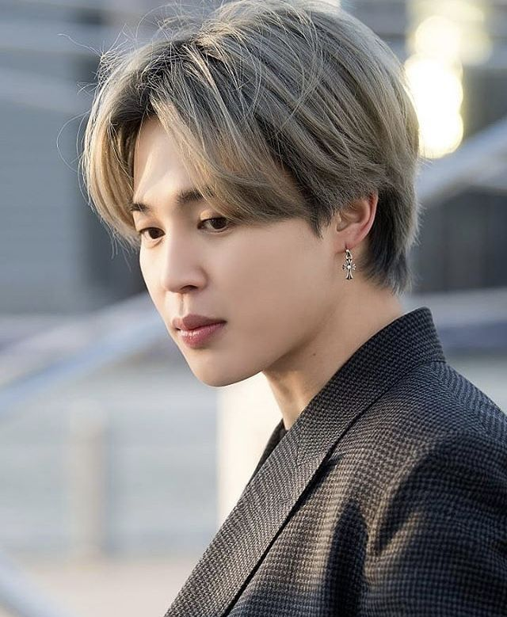
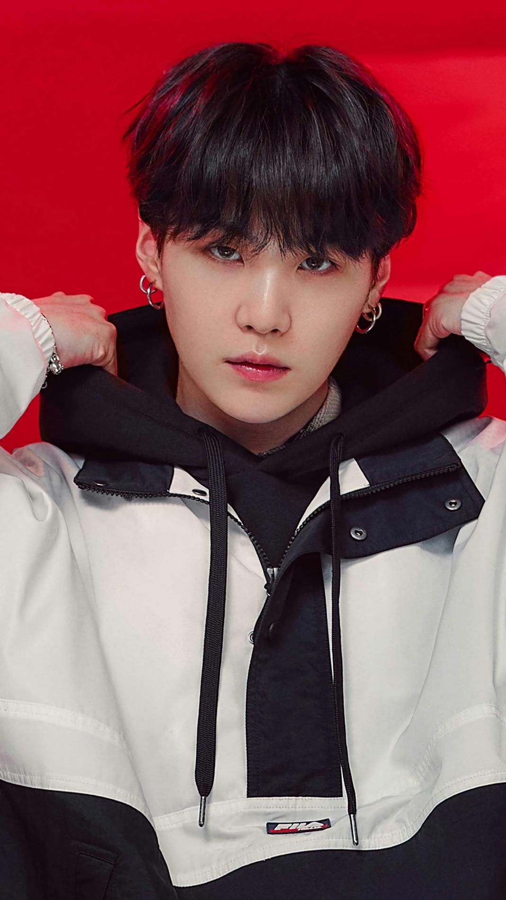

RAPMONSTER
Ngày 12/9/1994
Kim Nam-joon ̣(sinh ngày 12 tháng 9 năm 1994). Anh là trưởng nhóm của nhóm nhạc nam Hàn Quốc BTS.
JIN
4/12/1992
Kim Seok-jin (sinh ngày 4 tháng 12 năm 1992). Anh là thành viên của nhóm nhạc nam Hàn Quốc BTS.
J-HOPE
18/2/1994
Jung Ho-seok (sinh ngày 18 tháng 2 năm 1994). Anh là thành viên của nhóm nhạc nam Hàn Quốc BTS.
JIMIN
13/10/1995
Park Ji-min (sinh ngày 13 tháng 10 năm 1995). Anh là thành viên của nhóm nhạc nam Hàn Quốc BTS.
V
30/12/1995

Kim Tae-hyung (sinh ngày 30 tháng 12 năm 1995). Anh là thành viên của nhóm nhạc nam Hàn Quốc BTS.
SUGA
9/3/1993
Min Yoon-gi (sinh ngày 9 tháng 3 năm 1993). Anh là thành viên của nhóm nhạc nam Hàn Quốc BTS.
JUNGKOOK
Jungkook (BTS 방탄소년단) - Still With You (Easy Lyrics)
Xin chào
Facebook:Trương Nhật Mai
Call me:0344966276